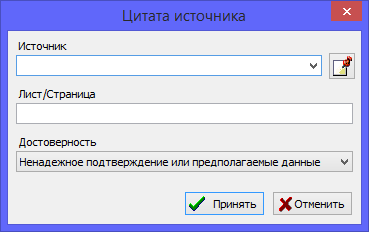

Ссылки на источники - это специализированные ссылки, создаваемые только в персональных или семейных записях, а также в событиях, которые указывают на конкретный источник информации, а также хранят два дополнительных параметра: лист/страницу из источника, где было упоминание, и уровень достоверности этой информации. Указание страниц удобно в тех случаях, когда нужно вновь вернуться к тому-же источнику и просмотреть его содержимое. Указание уровня достоверности полезно для того, чтобы в любой момент времени, когда во время исследования вы возвращаетесь к какому-то человеку и просматриваете откуда была взята информация, можно было сразу увидеть, насколько можно ей доверять. Если документ был с помарками, повреждениями и не вся информация была уверенно прочитана - полезно сразу указать "Сомнительный уровень доверия", чтобы позже не сделать ложных выводов.
Параметр уровня достоверности также используется для автоматического расчета индекса достоверности информации о персоне в блоке статистики для анализа средних показателей, а также в диаграммах деревьев для наглядного информирования пользователя.

Также смотрите: Источники, Персоны, Семьи, События/факты.